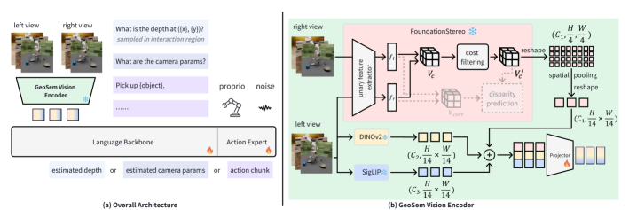

我是南方科技大学自动化专业大四本科生，导师为张巍教授，专业排名第 2/35。
目前，我在智能自主机器人（STAR）实验室担任科研实习生，由周博宇教授指导。此前，我曾在银河通用机器人科研实习期间接受王鹤教授指导。
我的研究聚焦于 Agent 与 robot learning：让 Agent 理解三维空间和物理世界，调用机器人技能进行决策与闭环行动，并探索自动化科研。我也关注受认知科学启发的具身智能，以及面向应急救援场景的户外 robot learning。
动态
2026
- 将于 2026 年 9 月至 12 月赴多伦多大学圣乔治校区应用科学与工程学院交流学习。
- 延续香港 Physical AI 黑客松的 Grand MVP 获奖项目，我正在探索用 Agent 驱动机械臂整理个人梳妆空间；项目仍处于早期阶段。
- 我们的获奖 AI 美妆机械臂获得南华早报、中国日报、SpacemiT 和 Brizan Ventures 报道。
- 我们的团队在香港 Physical AI 黑客松中，从 37 支队伍、160 名参赛者中脱颖而出，获得 Grand MVP 奖。
- 加入南方科技大学 STAR 实验室，担任科研实习生。
- 参与合著的 StereoVLA 被 Robotics: Science and Systems（RSS）2026 接收。衷心感谢邓胜亮和严汨给予我参与这项工作的机会。
- 开始在银河通用机器人进行科研实习，关注 robot learning 与 VLA。
论文
项目
研究与机器人项目
Agentic RL Supervisor
2026 年 7–8 月 · 个人主导项目
借助 Agent 构建长时间强化学习实验的监督原型：检查训练证据、提出权限范围内的课程调整，并从经过验证的 checkpoint 恢复训练。研究笔记记录了一次课程阶段晋级及一个未解决的瓶颈，讨论实验自动化的工程经验与能力边界。
空中抓取研究 — STAR 实验室
2026 年 6 月至今 · 南方科技大学 STAR 实验室 · 导师：周博宇教授
- 正在开展无人机真机空中抓取研究。
- 论文正在准备中。
Robot Learning 系统与数据工程 — 银河通用机器人
2026 年 1 月 – 2026 年 7 月 · 指导教师：王鹤教授
- 利用 HPC 资源，将 TFDS 数据集转换为项目使用的 LeRobot 格式，并验证转换结果。
- 搭建并调试 3D Diffusion Policy 风格的深度图到点云 baseline；分析失败案例，梳理 sim-to-real、坐标与动作表示以及部署中的问题。
- 协助完成机器人与推理系统的集成，并为另一项测试模型实验开展初始位姿测试。
- 调研基于 influence function 的 Data Curation 方法在具身学习中的应用。


面向真实机器人桌面操作的 3D Diffusion Policy
2025 年 2 月 – 2025 年 12 月 · 南方科技大学 CLEAR 实验室 · 学术导师：张巍教授
- 共同搭建并部署用于真实机器人桌面操作的 3D Diffusion Policy 完整流程。
- 负责 DP3 输入的点云预处理，包括工作空间裁剪与最远点采样（1,024 点）。
- 在第二轮端到端迭代中参与标定、示教数据采集、训练及基于 ROS 的部署。
- 分析策略抖动和多步骤任务失败，进一步关注感知与动作的衔接、示教数据覆盖范围和评估设计。

点足与轮足机器人运动控制强化学习
2025 年 6 月 – 2026 年 1 月 · 课程、竞赛与技术报告 · 学术导师：张巍教授
- 首先在 Isaac Gym 中开展点足机器人运动项目，随后将系统适配到轮足平台并用于竞赛部署。
- 针对轮足机器人爬楼梯任务优化奖励设置与运动约束，包括腿部离地间隙约束和双腿异步行为。
- 随后在 Isaac Lab 与 Isaac Sim 中继续训练点足机器人，增加扰动测试和更具挑战性的 curriculum。
- 在技术报告中补充第三阶段的实验分析；竞赛中，团队轮足机器人在 18 厘米真实台阶上完成了 10/10 次有记录的成功测试。

其他课程项目
无人机吊挂载荷建模与实验
2025 年 4 月 – 2025 年 6 月 · 课程项目 · 导师：陈亮名教授
- 使用牛顿-欧拉方程建立无人机吊挂载荷系统的动力学模型。
- 采集动作捕捉与 IMU 测量数据，将模型结果与真实飞行行为进行对比。
- 通过实践熟悉 PX4 与无人机控制流程。


基于智能剪刀的交互式图像分割
2025 年 3 月 – 2025 年 6 月 · 课程项目 · 导师：杨鹏教授
- 利用高斯模糊、Sobel 边缘检测与归一化代价图构建交互式图像分割工具。
- 实现 A* 寻路，并结合光标吸附与路径冷却，沿图像边界生成选区。
- 设计支持缩放、平移、网格叠加与视觉反馈的图形界面控件。


家庭用电负荷预测
2025 年 3 月 – 2025 年 6 月 · 课程项目 · 导师：林志赟教授
- 构建时间序列预测流程，包括按日重采样、缺失数据分析、周期编码、按时间顺序划分数据、缩放与滑动窗口监督。
- 在统一训练方案下实现并比较 CNN、TCN、LSTM 与 Transformer 模型，用于预测次日家庭用电量。
- 通过 MAE、MSE、RMSE、预测可视化与训练时间评估准确性和效率；TCN 的总体精度最佳，CNN 的训练速度最快。